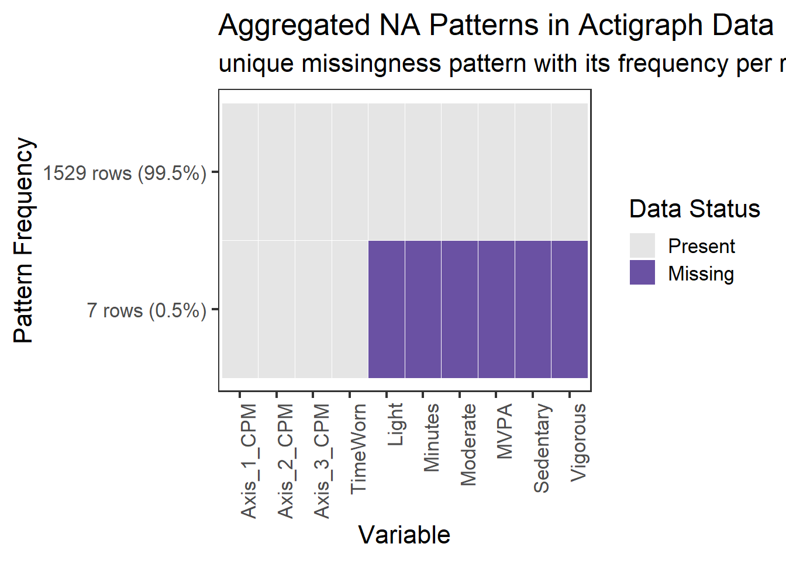
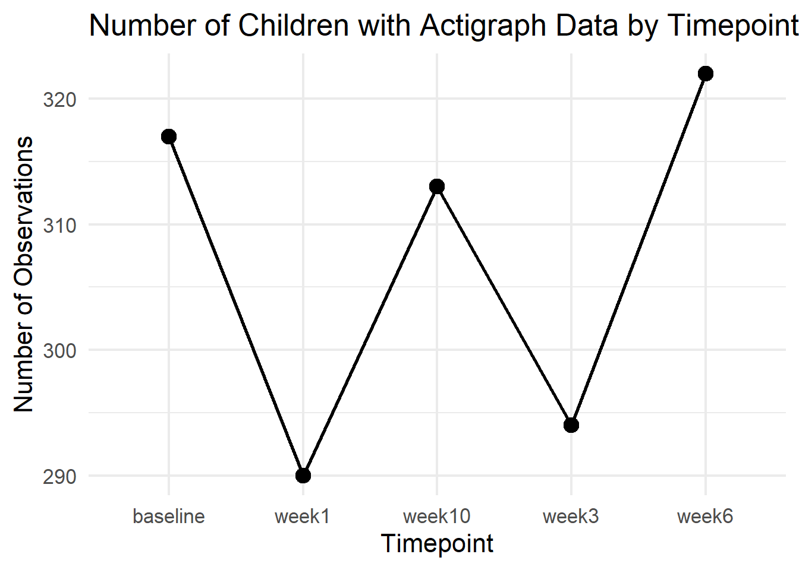
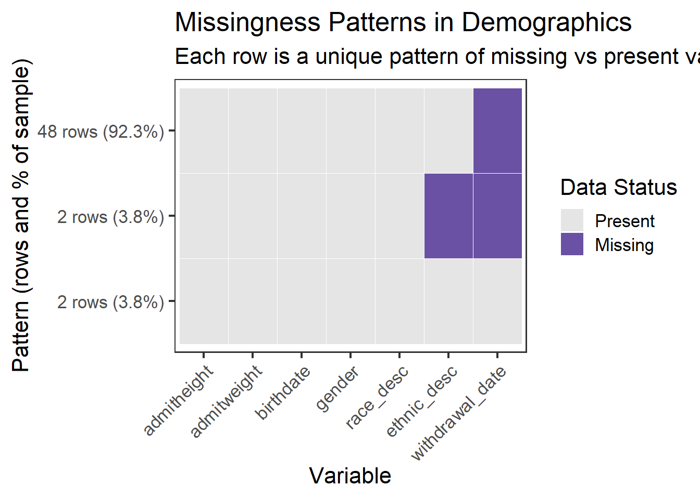
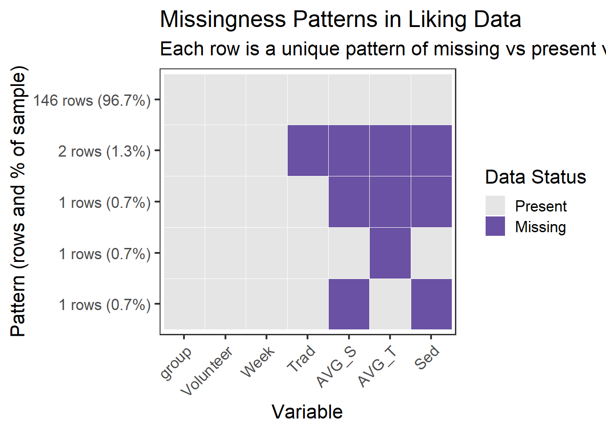

We draw on three main datasets from the project “The influence of active video game play upon physical activity and screen-based activities in sedentary children”, published by the U.S. Department of Agriculture and available on DATA.GOV.
The data are provided in CSV and Excel formats and are static, with the last metadata update on June 5, 2025. The demographics dataset (52 rows × 8 columns) includes measured and self-reported information such as height, weight, birth year, and ethnicity. The liking dataset (151 × 7) contains children’s self-reported ratings (1–10) of how much they enjoy various physical and sedentary activities at baseline, week 6, and week 10. Also, there is group when group = 0, kids need to play the games chosen my parents. When group = 1, they have autonomy and can choose their own game to play. The ActiGraph dataset (1,536 × 15) is collected using wearable accelerometer devices and provides objective, high-resolution physical activity data over multiple time points. While the data quality is generally strong, with most participants having complete records, some minor missing values appear in the liking data. A potential limitation is the reliance on self-reported responses for some variables, which may introduce bias.
ggplot( act_miss_agg_long,aes(x =reorder(variable, var_missing),y =reorder(paste0(n_rows, " rows (", percent_label, ")"), n_rows),fill =as.factor(missing) )) +geom_tile(color ="white") +scale_fill_manual(values =c("0"="grey90", "1"="#6A51A3"),labels =c("Present", "Missing") ) +labs(title ="Aggregated NA Patterns in Actigraph Data",subtitle ="unique missingness pattern with its frequency per row",x ="Variable",y ="Pattern Frequency",fill ="Data Status" ) +theme_bw(base_size =16) +theme(axis.text.x =element_text(angle =90, hjust =1),panel.grid =element_blank() )

From the graph, we can tell that only small number of data has missing value. In these rows, the raw CPM data are present, but the derived physical activity variables were not calculated. This suggests a data processing issue rather than a problem with the device itself. Since this represents a very small portion of the dataset, we drop these observations in the remaining analyses.
Code
actigraph_raw |>count(Timepoint) |>ggplot(aes(x = Timepoint, y = n)) +geom_line(aes(group =1), linewidth =1) +geom_point(size =4) +labs(title ="Number of Children with Actigraph Data by Timepoint",x ="Timepoint",y ="Number of Observations" ) +theme_minimal(base_size =16)

From this graph, we can find the total number of observation varies at different timepoint. This indicates some participants only participate certain trials. Though this is not counted as typical missing value (no NA, just missing some rows). Nevertheless, this is still important to be aware of when interpreting changes over time.
Code
demo_miss_long <- demo_raw |>mutate(row_id =row_number()) |>pivot_longer(cols =c(admitheight, admitweight, birthdate, ethnic_desc, gender, race_desc, withdrawal_date),names_to ="variable",values_to ="value",values_transform =list(value = as.character) ) |>mutate(missing =as.numeric(is.na(value)))# Aggregate to identify all missingness patternsdemo_miss_agg <- demo_miss_long |>select(row_id, variable, missing) |>pivot_wider(names_from = variable, values_from = missing, values_fn = max) |>group_by(across(-row_id)) |>summarise(n_rows =n(), .groups ="drop") |>mutate(pattern_id =row_number(),percent =100* n_rows /sum(n_rows),percent_label =paste0(round(percent, 1), "%"),y_label_text =paste0(n_rows, " rows (", percent_label, ")") )# Create a lookup vector for the labels so ggplot knows # that pattern_id 1 = "48 rows...", pattern_id 2 = "2 rows...", etc.y_label_map <-setNames(demo_miss_agg$y_label_text, demo_miss_agg$pattern_id) # <--- FIX# Convert back to long for plottingdemo_miss_agg_long <- demo_miss_agg |>pivot_longer(cols =-c(n_rows, percent, percent_label, pattern_id, y_label_text), # <--- FIX: include new colsnames_to ="variable",values_to ="missing")# Get missing count per variable for plot ordering (Same as before)var_missing_order <- demo_miss_long |>group_by(variable) |>summarise(var_missing =sum(missing), .groups ="drop")# Join order backdemo_miss_agg_long <- demo_miss_agg_long |>left_join(var_missing_order, by ="variable")# Plotggplot(demo_miss_agg_long,aes(x =reorder(variable, var_missing),# <--- FIX: Map Y to the unique ID, but order by count (n_rows)y =reorder(as.factor(pattern_id), n_rows), fill =as.factor(missing) )) +geom_tile(color ="white") +# <--- FIX: Tell ggplot to use the text labels we created earlierscale_y_discrete(labels = y_label_map) +scale_fill_manual(values =c("0"="grey90", "1"="#6A51A3"),labels =c("Present", "Missing") ) +labs(title ="Missingness Patterns in Demographics",subtitle ="Each row is a unique pattern of missing vs present values",x ="Variable",y ="Pattern (rows and % of sample)",fill ="Data Status" ) +theme_bw(base_size =16) +theme(axis.text.x =element_text(angle =45, hjust =1),panel.grid =element_blank() )

From the graph, we observe that the vast majority of participants (92.3%) have complete demographic data, except for the withdrawal_date, which is missing for most of them. This likely indicates that these individuals did not withdraw from the program — a positive sign of retention and overall data completeness.
Only 2 participants (3.8%) chose not to disclose their ethnicity (ethnic_desc), which is a minimal proportion. This suggests high participant engagement and transparency in data collection.
Code
# Step 1: Add row ID and pivot to long formatliking_miss_long <- liking_raw |>mutate(row_id =row_number()) |>pivot_longer(cols =-row_id, # EXCLUDE row_id so it doesn’t get pivotednames_to ="variable",values_to ="value",values_transform =list(value = as.character) ) |>mutate(missing =as.numeric(is.na(value)))# Step 2: Summarize unique missingness patterns in wide formatliking_miss_agg <- liking_miss_long |>select(row_id, variable, missing) |>pivot_wider(names_from = variable, values_from = missing, values_fn = max) |>group_by(across(-row_id)) |>summarise(n_rows =n(), .groups ="drop") |>mutate(pattern_id =row_number(),percent =100* n_rows /sum(n_rows),percent_label =paste0(round(percent, 1), "%"),y_label_text =paste0(n_rows, " rows (", percent_label, ")") )# Step 3: Create y-axis label mapy_label_map <-setNames(liking_miss_agg$y_label_text, liking_miss_agg$pattern_id)# Step 4: Convert back to long format for plottingliking_miss_agg_long <- liking_miss_agg |>pivot_longer(cols =-c(n_rows, percent, percent_label, pattern_id, y_label_text),names_to ="variable",values_to ="missing" )# Step 5: Get missing count per variable for plot orderingvar_missing_order <- liking_miss_long |>group_by(variable) |>summarise(var_missing =sum(missing), .groups ="drop")# Step 6: Join order info backliking_miss_agg_long <- liking_miss_agg_long |>left_join(var_missing_order, by ="variable")# Step 7: Plotggplot(liking_miss_agg_long,aes(x =reorder(variable, var_missing),y =reorder(as.factor(pattern_id), n_rows),fill =as.factor(missing) )) +geom_tile(color ="white") +scale_y_discrete(labels = y_label_map) +scale_fill_manual(values =c("0"="grey90", "1"="#6A51A3"),labels =c("Present", "Missing") ) +labs(title ="Missingness Patterns in Liking Data",subtitle ="Each row is a unique pattern of missing vs present values",x ="Variable",y ="Pattern (rows and % of sample)",fill ="Data Status" ) +theme_bw(base_size =16) +theme(axis.text.x =element_text(angle =45, hjust =1),panel.grid =element_blank() )

From the graph we can tell that Almost all kids (96.7%) have full data. The few missing values show up in the liking scores (like AVG_S, AVG_T, Sed), not in group or ID info. So maybe some kids skipped questions.
2.3 Data Cleaning
Code
library(readxl)library(tidyverse)
── Attaching core tidyverse packages ──────────────────────── tidyverse 2.0.0 ──
✔ lubridate 1.9.4 ✔ stringr 1.5.2
✔ purrr 1.1.0 ✔ tibble 3.3.0
✔ readr 2.1.5
── Conflicts ────────────────────────────────────────── tidyverse_conflicts() ──
✖ dplyr::filter() masks stats::filter()
✖ dplyr::lag() masks stats::lag()
ℹ Use the conflicted package (<http://conflicted.r-lib.org/>) to force all conflicts to become errors
Code
library(lubridate)library(janitor)
Attaching package: 'janitor'
The following objects are masked from 'package:stats':
chisq.test, fisher.test